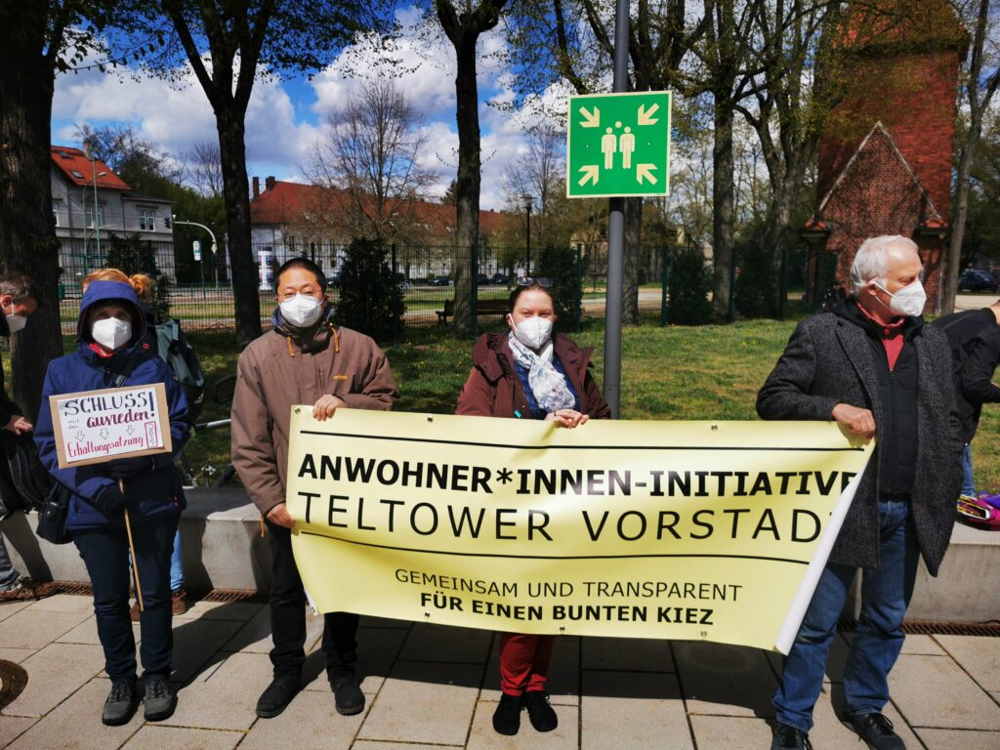
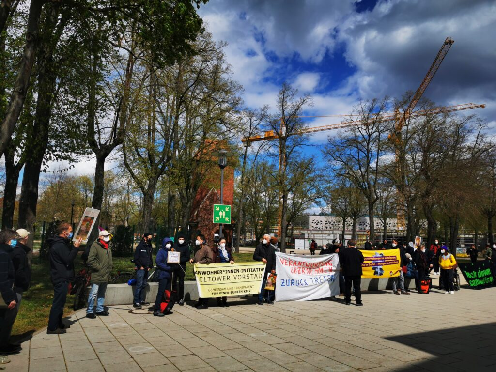
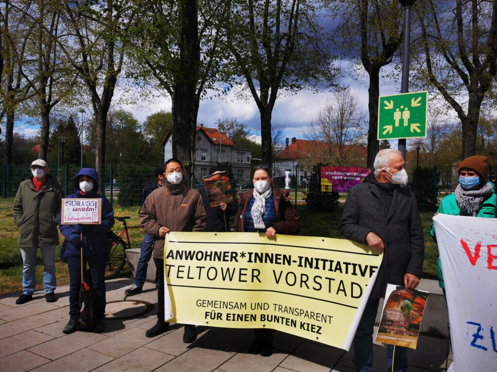
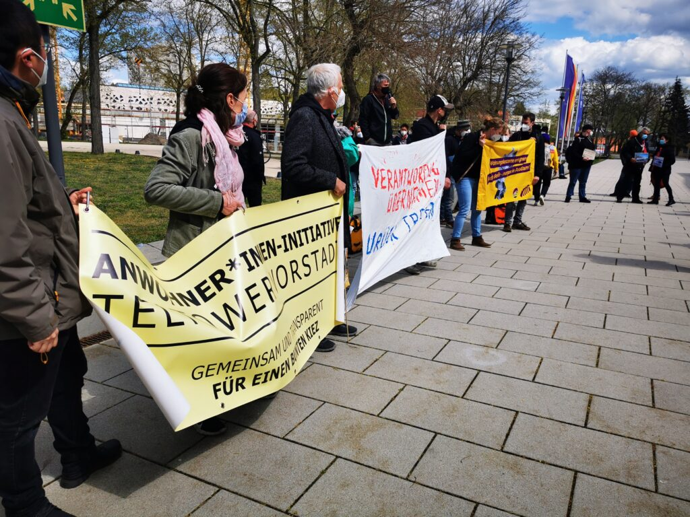
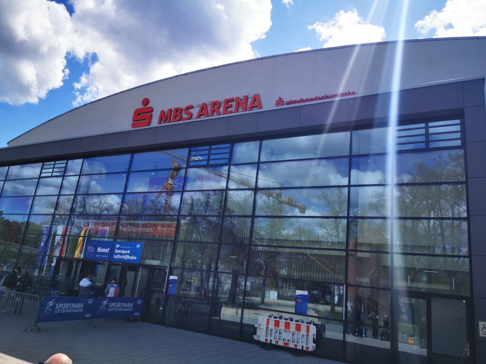
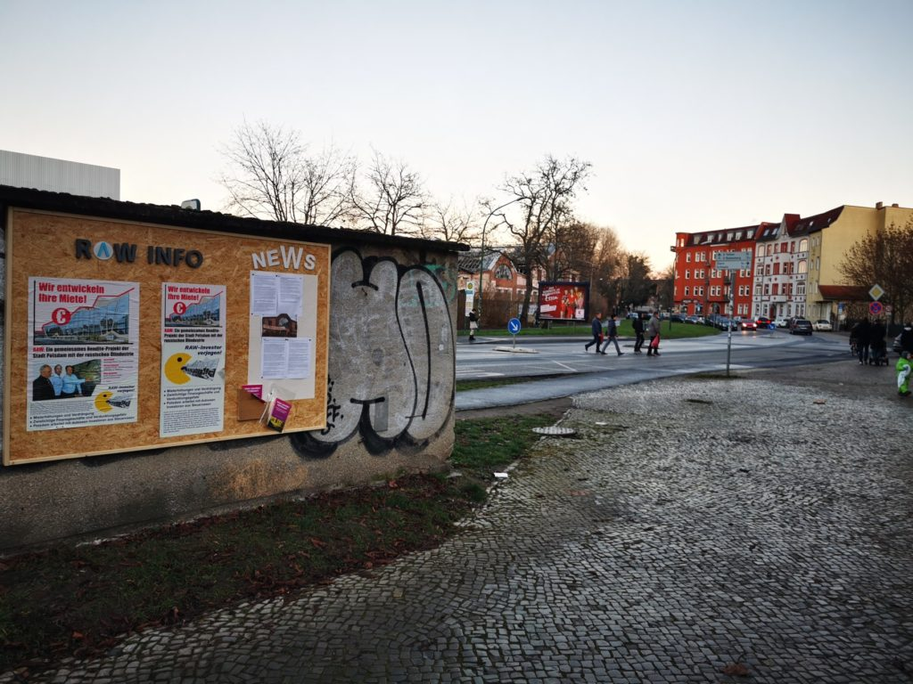

Seit einiger Zeit sorgt die Initiative „Mietendeckel Potsdam“ für frischen Wind in der Stadtpolitik. Sie versucht mit einem Bürgerbegehren auf kommunaler, also städtischer Ebene den „exponentiell“ steigenden Mieten einen Riegel vorzuschieben.
Dafür sieht ihr Bürgerbegehren vor, dass binnen 5 Jahren die kommunale Vermieterin ProPotsdam GmbH ihre Bestandsmieten nur noch um maximal 1% erhöhen darf, also durchschnittlich 0,2% p.a.
Das sorgt dafür, dass die Mieten weiterhin in den qualifizierten Mietspiegel einfließen, der veränderte Mieten der letzten sechs Jahre berücksichtigt. Weiterhin drückt die vergleichsweise geringe Steigerung der ProPotsdam-Mieten die Mieten im privaten Wohnungsmarkt durch den alleinigen Wohnnungsanteil der ProPotsdam in der Stadt (> 17.000 stand 2021).
01.06.2021, 14 Uhr, Teltower Vorstadt
Starten soll das Ganze am 01.06.2021 mit einer Auftaktveranstaltung, zu der informiert und bereits gesammelt wird. Starten wird die Initiative um 14 Uhr Ecke Schlaatzweg und Schlaatzstraße in 14473 Potsdam, da hier auch die letzten Mieterhöhungen der ProPotsdam GmbH stattgefunden haben und das Viertel mit der ausstehenden sozialen erhaltungssatzung aktuell bekannt geworden ist.
Nähere Informationen zur Initiative findet ihr auf Facebook und bald auch der Homepage
Am 13. Mai hatten wir eine Gesprächsanfrage an zwei potsdamer Parteien verschickt (1) Bündnis 90 – die Grünen und (2) SPD mit Bitte um Austausch zum Thema soziale Erhaltungssatzung.
Erstere offerierte uns einen Gesprächstermin, welchen wir für einen konstruktiven Austausch wahrgenommen haben. Daraus nehmen wir mit, dass es mehr als nur der Verwaltund und SVV bedarf und so bieten wir auch hier unsere Hilfe an.
Anfrage an die SPD
Sehr geehrte [Damen und Herren,] (…)
die Anwohner*innen-Initiative Teltower Vorstadt wendet sich an Sie in ihrer Funktion als Vorstand der SPD-Fraktion in der Potsdamer Stadtverordnetenversammlung. Sie haben in den zurückliegenden Jahren die Diskussionen um das Bauvorhaben auf dem ehemaligen RAW-Gelände verfolgt. In diesem Zusammenhang haben Sie auch mit Vertreter*innen unserer Initiative Gespräche geführt. Bekannt ist Ihnen daher auch unsere Forderung, das Instrument einer Sozialen Erhaltungssatzung zu nutzen, um die zu erwartenden negativen sozialen Auswirkungen des Großprojektes Creative Village ein Stück weit abzufedern.
Für diese Forderung haben wir auch von Ihrer Fraktion Zustimmung erhalten. Ein entsprechender Beschluss zur Aufstellung einer Sozialen Erhaltungssatzung wurde zudem in der SVV gefasst. Nennenswerte Fortschritte sind jedoch bis heute nicht zu verzeichnen und erst im Rahmen der letzten Sitzung der SVV berichtete der Oberbürgermeister, dass die knappen Verwaltungsressourcen eine zeitnahe Bearbeitung ebenfalls nicht erwarten lassen.
Wir bitten daher um die Möglichkeit, als Gast an einer der kommenden Sitzungen ihrer Fraktion teilnehmen zu können. Insbesondere wollen wir gern verstehen, welche Limiitierungen aus ihrer Sicht bislang die Umsetzung des SVV-Beschlusses verhindert haben und welche Instrumente zur Verfügung stehen, um dies zu ändern.
Wir freuen uns auf Ihre Antwort, in der Sie hoffentlich unserer Bitte mit einem Terminvorschlag entsprechen können. Bei etwaigen Rückfragen stehen wir vorab auch gern für einen Austausch zur Verfügung.
Mailanfrage vom 13.05.2021 an SPD-Stadtfraktion@rathaus.potsdam.de
Die SPD antwortete entgegen unserer Erwartung erst sehr knapp bemessen und dann gar nicht mehr auf unsere Rückfrage, obwohl sie 2019 per „Flugblatt“ im Kommunalwahlkampf noch groß versprochen hatte zum Thema soziale Erhaltungssatzung aktiv mit den Anwohner*innen zusammen zu arbeiten. So kann sich die Meinung ändern und der Eindruck täuschen. Wir jedenfalls waren sehr erstaunt und werten dies als Bekenntnis, dass die Anliegen der Bürger*innen nur dann relevant sind, wenn es nicht konkret wird.
erst vor kurzem hatten Sie sich bereits an die Verwaltung gewandt und eine ausführliche Stellungnahme erhalten. Auch waren bereits mehrere Stadtverordnete unserer Fraktion mit Ihnen im Austausch. Aufgrund der genannten Punkte ist aus unserer Sicht gegenwärtig eine weitere Diskussion nicht erforderlich. Aber selbstverständlich stehen wir bei künftigen neuen Entwicklungen für einen weiteren Austausch bereit.
Interessant ist auch, dass die SPD als Antwort nur auf unsere Anfrage bei der Verwaltung verweist – diese hat mit der SPD selbst jedoch eigentlich nichts zu tun, oder etwa doch? Sind die Grenzen hier schon so verschwommen? Enttäuschend ist hier die Erkenntnis, dass die SPD scheinbar keinen Handlungsbedarf aufgrund der aktuellen Situation gegeben sieht und die vorangegangenen Aussagen der Verwaltung als ausreichend empfindet, was wiederum überdeutlich am Empfinden der Anwohner*innen vorbei geht.
Stadtpolitik wünschen wir uns anders: mit den Menschen, nicht gegen sie. So etwa sieht das auch Stadt für alle.
Heute tagte die 19. Stadtverordnetenversammlung (SVV) 2021 in der MBS Arena Potsdam und bearbeitet aufgrund der Fülle der Tagesordnung nur eine gekürzte Fassung von Themen (PDF).
Für uns relevanteste TOPs
Ö 6.7 Mietenerhöhungsmoratorium
Hier forderten die aNDERE, dass sämtliche durch die ProPotsdam während der Pandemie aufgeführten Mieterhöhungen zurückgenommen werden mögen, um es den betroffenen Mieter*innen nicht unnötig schwierig zu machen.
Heraus kam der etwas weichere Beschluss, dass für die bereits ausgesprochenen Erhöhungen einzelne Härtefallprüfungen vorgenommen werden können, wenn sich die Mieter*innen bei Ihrem Vermieter, der ProPotsdam GmbH, melden. Weiterhin dürfen Mieterhöhungen vorgenommen werden, jedoch nicht ohne Einzelfallprüfung zur Vermeidung von unbilligen Härten.
Der Oberbürgermeister wird beauftragt, mit der Geschäftsführung des städtischen Wohnungsunternehmens ProPotsdam zu vereinbaren, dass, bis zum Auslaufen der Gültigkeit der Eindämmungsverordnungen im Zusammenhang mit der SarsCov2- Pandemie keine weiteren Mieterhöhungen ohne Einzelprüfung zur Vermeidung von unbilligen Härten wirksam werden. Hierbei hat der Mieter aktiv auf die ProPotsdam zur Überprüfung der Mieterhöhung zuzugehen. Der Hauptausschuss soll am 09.06.2021 über den Sachstand informiert werden. Berichterstattung im GSWI-Ausschuss am 05.10.2021.
Da die Initiative Mietendeckel Potsdam (Homepage, Facebook) zu Mitte Mai plant mit dem Bürgerbegehren zu starten und Unterschriften zu sammeln rückt eine potentielle Restriktionsrichtlinie für die ProPotsdam GmbH in greifbare Nähe.
Ziel ist es langfristig den Mietenspiegel in Potsdam zu bremsen, indem man dem kommunalen Wohnungsunternehmen ProPotsdam GmbH vorschreibt in fünf Jahren ihre Mieten max. um 1% zu erhöhen. Damit bleiben die Mieten im Bestand des Mietspiegels (berücksichtigt letzten 6 Jahre). Der so sinkende Mietpreis innerhalb eines „Bausegmentes“ (z.B. Baujahr 1948 vollsaniert) minimiert damit allein aufgrund des Wohnungsanteils (17.000 Wohnungen in Potsdam) der ProPotsdam GmbH den Spielraum für andere Vermieter*innen.
Mitstreiter*in der Initiative Mietendeckel Potsdam
Die CDU hat deshalb – neben der seit über zehn Wochen ausstehenden Kostenschätzung – eine detaillierte Aufdröselung möglicher kurz-, mittel- und langfristiger Folgen bis Oktober 2021 vom Oberbürgermeister erbeten, siehe Vorlage 21/SVV/0496.
Ö10.13 soziale Erhaltungssatzung
Unter anderem auf dem Plan stand die soziale Erhaltungssatzung, welche gegen etwa 20 Uhr (nicht) behandelt wurde, denn hierbei wurde ein Großteil der Tagesordnungpunkte unter 10 schlichtweg als Block durchgewunken.
Somit wurde dem Antrag nachgegeben, sodass die Erhaltungssatzung erst bis Juni/Juli 2022 fertig gestellt sein müsse – und das trotz Aufstellungsbeschluss im November 2020. Grund hierfür sei laut Frau Meier (GB3), dass die Satzung auch gerichtsfest sein müsse. Lediglich Herr Wollenberg (Linke), so der Bericht der PNN, habe hier Stellung bezogen und an die Dringlichkeit der Sache erinnert.
Eine Satzung wäre schon wieder obsolet, wenn man so lange brauche
Damit vreschiebt sich das doch so relevante und auch dringende Thema zum Schutz der Mieter*innen in der Teltower Vorstadt von 2019 auf 2022, also somit drei Jahre.
Drei Jahre in denen es scheinbar kein Problem zu sein scheint trotz Pandemielage:
Bauanträge durchzuwinken,
Gutachten zu erstellen und
Investoren an Land zu ziehen
Aber wenn es um die Erhaltungssatzung, und damit den Schutz der Bürger*innen vor Ort geht, reichen die personellen Ressourcen dann leider nicht mehr – und eine Abhilfe ist binnen drei Jahren ja auch zu viel von einem Oberbürgermeister verlangt (Achtung: Sarkasmus!).
Kundgebung 14.00-15.30 Uhr
Auf der Kundgebung (Flyer Stadt für alle) vor der SVV um 14 Uhr kamen viele dieser Themen brandaktuell noch einmal zur Sprache, vor allem auch nachdem der Oberbürgermeister sein Schreiben zur Terminverlängerung der Erhaltungssatzung eingereicht hat:
Null-Mentalität der Stadtpolitiker*innen
Staudenhof
ProPotsdam „Taschenspielertricks“
Instrumentalisierung der ProPotsdam
Mieterhöhungsmoratorium
Versagen in der Schaffung einer sozialen Erhaltungssatzung
Zur Nullmentalität führt Stadt für alle in ihrem Flyer und in einer kurzen Ansprache vor Ort aus (sinngemäß) und fordert Konsequenzen für diese Versäumnisse in Form von Rücktritten und Mandatsaufgaben:
NULL mietpreis- und belegungsgebundene Wohnung durch Baulandmodell 2017-2021





Zum Staudenhof wird verkündet, dass dieser abgerissen werden soll um im Leitbautensystem neuen Raum zu schaffen. Die Linke und das Bündnis 90 de Grünen trösten sich hierbei mit einem Antrag auf vorherige Bürgerbefragung, was jedoch kaum etwas am Ausgang ändern wird. Dies kommt einem ökologischen und sozialen Versagen der SVV gleich, welches durch die Protokolle auch noch dokumentiert wird.
Ein*e Sprecher*in verkündet weiterhin zwischen den musikalischen Einlagen, dass die ProPotsdam GmbH „Taschenspielertricks“ verwende, wie z.B.:
angeblich sei ein Neubau lukrativ, da dieser speziell gefördert würde. Das eine Sanierung aber auch gefördert würde und sogar noch andere Fördermöglichkeiten bieten würde wird hierbei weggelassen
weiterhin sei durch einen Abriss ein Neubau mit Anbau möglich. Wer sagt, dass dies nicht auch bei einer Sanierung möglich wäre?
Grundsätzlich stellt der/die Sprecher*in heraus, dass eine Instrumentalisierung der ProPotsdam GmbH zugunsten der Anliegen von Stadtverordneten stattfinde. Das wiederum ist nicht Aufgabe einer kommunalen, sozialen Wohnungsvermietung.
In einem weiteren Block ist die Rede von dem geplanten Mieterhöhungsmoratorium, welches durch die ProPotsdam GmbH umgehend mit vielen Gutachten als unlukrativ und nicht finanzierbar abestemeplt wird. Wird jedoch nach einem Gutachten, bzw. einer Ausformulierung einer Kostenschätzung zu einem „Mietendeckel“ (1% Steigerung in 6 Jahren) oder gar einer Auformulierung einer sozialen Erhaltungssatzung gefragt, so braucht es drei Jahre um festzustellen, dass es nicht genug Perosnal zu geben scheint (was seit Jahren der Fall ist!). Vielleicht wäre es hier mal an der Zeit die Ressourcen innerhalb der Verwaltung bzgl. der Erstellung von Gutachten zu überdenken?!
Quintessenz
Man sieht wieder einmal wo die Prioritäten der Stadt liegen und wie wenig die Meinung von Bürger*innen zu Themen zählen, die am Ende doch nur sie ausbaden dürfen.
Darum seid laut, tut eure Meinung kund, schließt euch uns an und wir gehen die Dinge gemeinsam, coronakonform und im Rahmen der rechtlichen Möglichkeiten an.
Nach einem virtuellen Treffen der Kerngruppe unserer Anwohner*innen-Initiative Teltower Vorstadt am heutigen Freitag um 17 Uhr wurden vor allem zwei Punkte für das weitere Vorgehen besprochen:
Stand RAW und Handlungsmöglichkeiten
Stand soziale Erhaltungssatzung und Handlungsmöglichkeiten
Im Grunde wurde festgehalten, dass das Vorhaben auf dem RAW-Gelände weder an Dringlichkeit noch Relevanz verloren hat, die Handlungsmöglichkeiten zur Bürgerbeteiligung nun aber in die finale Phase gehen. Daher bleibt der Aufruf die eigenen Belange und ggf. Bedenken zum Projekt direkt selbst der Stadt mitzuteilen; diese wird die eingetroffenen Meldungen dann in die finale Abwägung mit einfließen lassen, bevor im Anschluss der Baubeginn verkündet werden wird. Daher ist es wichtig in dieser letzten Beteiligungsphase durch die Öffentlichkeit die Chance zu nutzen der eigenen Meinung Stimme zu verleihen.
Die Dinglichkeit eine soziale Erhaltungssatzung hingegen steigt mit jedem verstrichenen Tag. Ein Jahr „Auftragsaussetzung“ hatte die Stadtverordnetenversammlung 2020 beschlossen, sodass eingehende Aufträge bis zur Fertigstellung der Satzung innerhalb eines Jahres ausgesetzt werden können. Hier liegt es also auch an unserer Initiative am Ball zu bleiben und der Stadt zu verstehen zu geben, dass für alle Belange gleiches Engagement gefordert ist.
Kurz und knapp zum RAW-Projekt
Aktuell liegen die Dokumente öffentlich/online aus (14.04.-16.05.2021), siehe auch unser Beitrag vom 29.03.2021.
Das heißt aktuell können nochmals Anmerkungen, Bedenken oder andere Hinweise an die Stadt kommuniziert werden, die das RAW-Projekt betreffen. Diese Chance sollten wir alle nutzen, wenn wir wichtige Punkte haben, die wir aktuell noch nicht ausreichend beachtet finden.
Auch wir bleiben nicht untätig und hören uns um, ob es z.B. inhaltliche oder verfahrenstechnische Beanstandungen gibt, die für die Umsetzung relevant sind. Schließlich soll alles mit rechten Dingen zugehen und die Stadt eine hinreichend gute Absicherung zur Nutzung des Gebäudes haben. Unsere Forderungen hierzu bleiben unverändert:
Sicherung der Nutzungsfestlegung (anhand z.B. prozentualer Flächenverhältnisse)
Sicherung der Mietergruppen (z.B. StartUps, …)
Sicherung der Wohnsituation in der direkten Nachbarschaft (soziale Veränderungen, wie Gentrifizierung verhindern)
Kaum zu glauben, dass binnen eines Jahres ein so großes Bauprojekt gleich neben unseren Haustüren genehmigt werden konnte, wo doch mit der sozialen Erhaltungssatzung in der Stadt zurückhaltend umgegangen wird.
Wo stehen wir in Sachen Milieuschutz?
Hatte es hier anfangs Aufwind gegeben, als die Aussetzung von Beugenehmigungen für ein Jahr von der Stadtverordnetenversammlung durchgewunken wurde, so merkt man davon aktuell nichts mehr. Es ist still geworden um den vermeintlich erhofften Fortschritt der sozialen Erhaltungssatzung und den Geschäftsbereich 3 unter Frau Meier.
Daher ist es uns einmal mehr ein Anliegen dem nachzufühlen und die Stadt daran zu erinnern, dass die soziale Erhaltungssatzung mit mindestens genausoviel Elan voranzubringen ist, wie ein solches Bauvorhaben am RAW Gelände.
Jüngst sollte nach unserem Kenntnisstand und den Auskünften aus früheren Gesprächen das Grob-Screening für ganz Potsdam angelaufen sein, sodass eine Befragung der Anwohner*innen der Teltower Vorstadt nach festgelegten Kriterien ermöglicht wird. Davon wissen wir nach jetzigem Stand jedoch noch nichts – daher werden wir noch einmal bei der Stadt nachfragen, wie hier der Stand der Dinge ist.
Nach einigem Hin und Her, der langen Winterpause und der im November von der stadtverordnetenversammlung Beschlossenen Auslegung folgt die finale Phase der Bürgerbeteiligung: die öffentliche Auslegung zum vorhabenbezogenen Bebauungsplan Nr. 36 „Neue Halle / östliches RAW-Gelände“.
Öffentlich ausgelegt werden nun im Zeitraum vom 14. April bis zum 16. Mai 2021 der Vorhaben- und Erschließungsplan sowie der Entwurf des Bebauungsplans und die dazugehörige Begründung. Weiterer Bestandteil der ausliegenden Unterlagen sind auch die wesentlichen, bereits vorliegenden, umweltbezogenen Stellungnahmen und Dokumente.
Ziel des Bauleitplanverfahrens ist es, das östliche ehemalige Gelände des Reichsbahnausbesserungswerks an der Friedrich-Engels-Straße zu einem zusammenhängenden und geordneten Standort zu entwickeln und die denkmalgeschützte Wagenhalle zu erhalten sowie einer nachhaltigen und wirtschaftlich tragfähigen Nutzung zuzuführen.
Das ist der Zeitraum, in dem die Unterlagen eingesehen und Anmerkungen gemacht, Bedenken geäußert und Fehler aufgezeigt werden können. Diese sind zu richten an die auf den jeweiligen Seiten genannten Ansprechpersonen.
Alle Dokumente finden sich auch im Downloadbereich der Stadt Potsdam.
Auch in diesem Jahr findet wieder der Housing Action Day in Potsdam statt, der mit vielfältigen Aktionen gegen Verdrängung und Mietenwahnsinn aufwartet – natürlich coronakonform.
Die Anwohner*innen-Initiative Teltower Vorstadt (AITV) unterstützt diesen Aufruf (Link), um aktuelle Themen der Wohnsituation wieder ins Gedächtnis der Menschen und vor allem der Stadtpolitiker*innen zu rufen.
In Potsdam wird es laut offizieller Homepage zum HOUSING ACTION DAY 2 Aktionsformen geben:
11 Uhr: An 6 Orten Aktionen von Kleingruppen zu hochaktuellen stadtpolitischen Themen (Staudenhof, ProPotsdam, Möblierte Wohnungen, Deutsche Wohnen etc.)
15 Uhr: startet dann eine Demo ab dem RAW – Gelände hin zum Staudenhof unter dem abgewandelten Motto „Potsdam für Menschen, statt für Profite“ (Stadt für alle)
Themen der Anwohner*innen-Initiative
Die Anwohner*innen-Initiative Teltower Vorstadt möchte im Rahmen der Veranstaltung das Thema soziale Erhaltungssatzung in der Teltower Vorstadt wieder in den Vordergrund rücken und die Wohnsituation dieses Kiezes repräsentieren.
Um 11 Uhr wollen wir uns am freiLand treffen um mit Plakaten auf unsere Themenschwerpunkte „Milieuschutz / soziale Erhaltungssatzung“, „behutsame Stadtentwicklung“ und „bezahlbares Wohnen“ aufmerksam zu machen – die Nachbarschaft ist (mit Abstand und Maske) herzlich willkommen! Wir wollen mit Bildern unsere Statements dokumentieren und freuen uns daher über ein diverses Auftreten unseres Kiezes.
AITV vorm RAW
AITV vorm RAW mit Banner
AITV vor der Einfahrt in die Schlaatzstraße
Stadt für alle und Co.
Darüber hinaus veranstaltet – davon losgelöst – Stadt für alle noch weitere Aktionspunkte. Informationen dazu sind zu finden auf deren Homepage oder in ihren Blogeinträgen.
Hier nun ein paar Impressionen zur im Anschluss von Stadt für alle organisierten Demonstration 15-17 Uhr in Potsdam, mitorganisiert von fridays for Future und Extension Rebellion. Die Teilnehmer*innen-Zahlen schwanken von 150 bis 300, je nach Quelle; sicher ist: es waren VIELE.
Die Stimmen werden lauter, denn es bildet sich gerade eine neue Initiative über ganz Potsdam, die sich stark machen will für die Einschränkung der Mieterhöhungen. Heute war das zweite coronackonforme Treffen via Videokonferenz-Dienstleister, und auch heute wurden wieder wichtige Punkte angesprochen, nächste Schritte definiert und rege diskutiert.
Werde Teil von etwas Großem…
… und hilf uns das Anliegen weiter zu streuen! Die Initiative „Potsdamer Mietendeckel“ denkt über Aktionen nach, welche langfristig gesehen die steigenden Mieten in Potsdam über den qualifizierten Mietspiegel bremsen können.
Häufige Fragen (F&A)
Was kann man tun, um zu helfen? Na zum Beispiel Farbe bekennen und öffentlich aaftreten, an (digitalen) Treffen teilnehmen und die eigenen Erfahrungen und Wünsche einbringen, oder aber an Informationsständen und -veranstaltungen (sofern mit Corona möglich) teilnehmen und Unterschriften sammeln. Nachbar*innen und Freund*innen informieren, motivieren und die eigenen Netzwerke aktivieren. Gerne auch mit Fachkenntnissen aushelfen, wenn es um die Gestaltung oder Textverfassung geht.
Wie kann man mitmachen? Ganz frisch eingetroffen: es gibt einen Mailverteiler, in den Personen zugelassen werden können, die entweder an einem (virtuellen) Treffen teilgenommen haben oder von jemandem aus dem Verteiler „empfohlen“ wurden: also über Bekanntschaften. Die (virtuellen) Treffen finden derzeit ca. alle zwei Wochen statt – dies kann sich aber noch ändern, wenn es in die heiße Phase geht.
Wer kann mitmachen? Natürlich alle, die sich engagieren wollen und bereit sind sich in der ein oder anderen Rolle zu beteiligen.
wie es scheint lohnt sich der Einwand gegen z.B. das Einstufungskriterium „Nahversorgung innerhalb ca. 1km“, denn es spricht sich herum, dass manche Mieter*innen dieses Kriterium nachgelassen bekommen haben. Es wurde also wieder abgezogen von der geplanten Mieterhöhung und eine neue Mieterhöhung mit einem Kriterium weniger berechnet.
Doch Vorsicht: diese nunmehr korrigierte Mietanpassung soll rückwirkend zum 01.12. geltend gemacht werden. Wie es sich rechtlich verhält ist nicht ganz klar, ob man dem so zustimmen muss, uns erreichte aber die Information, dass einige Mieter*innen dies erst für zukünftige Abbuchungen gestatten wollen und nicht rückwirkend.
Die Essenz daraus ist: erhebt Einspruch, wenn das Kriterium defacto nicht stimmt und bietet Gegenwind, wenn die Mieterhöhung euch an eure finanziellen Grenzen bringt – es kann sich lohnen.
Hinter uns liegt ein anstrengendes, kompliziertes und in manchen Teilen sicher auch frustrierendes Jahr 2020. Seien es die letzen Bemühungen die Anliegen der Anwohner*innen in die Planung und Umsetzung des RAW-Projektes einzubringen, oder die Umstände Treffen in neuen Rahmen zu veranstalten. Dazu kommt dann sicherlich auch dieses kleine, nicht greifbare Virus, dass die Menschheit auf Trapp hält und so manchem Plan einen Strich durch die Rechnung gemacht hat.
ein Resumée
Alles in allem war das Jahr 2020 aber auch erfolgreich in vielerlei Hinsicht:
wir konnten noch einmal die Anliegen der Anwohner*innen in die Planung des RAW-Projektes einbringen und so Einfluss nehmen (hier können während der öffentlichen Auslegung noch ein letztes Mal aktiv Bedenken von öffentlicher Seite eingereicht werden)
die Stadtverwaltung hat einmal mehr feststellen müssen, dass solche Großprojekte nicht einfach an den Bürger*innen vorbei durchgewunken werden können und Bürgerbeteiligung auch proaktiven Diskurs bedeutet und nicht nur „eine Liste auslegen und diese dann ignorieren“
der Aufstellungsbeschluss für die Erhaltungssatzung wurde gefasst und hat der Stadtverwaltung so ein Jahr Luft gegeben sich auf die Ausarbeitung zu stürzen
ebenfalls haben wir uns intensiv mit der LINKEN ausgetauscht und starkes Interesse an einer Unterstützung zur Ausarbeitung dieser Satzung bekundet
unser Kiez hat einmal mehr gezeigt, dass er lebendig ist und die Menschen einander helfen, wenn es hart auf hart kommt
das freiLand hat uns mehr als einmal die Möglichkeit gegeben uns innen wie außen zu treffen und so ein Voranschreiten der Aktionen unserer Initiative zu ermöglichen – an dieser Stelle ein großes DANKE an euch!
to be continued…
Was bedeutet das für uns, nun wo das RAW-Projekt ins Rollen kommt? Nun, wir hoffen, dass sich nochmals viele Anwohner*innen und Bürger*innen bei der öffentlichen Auslegung beteiligen, um Ihren Bedenken Raum zu geben. Darüber hinaus wollen wir weiterhin für Anliegen der Anwohner*innen als Sprachrohr fungieren und so eine Plattform für Austausch und Innovation bieten. Vielleicht schaffen wir es gemeinsam im Kiez einen regelmäßigen „Alltag“ zu etablieren, sei es nun in monatlichen Tauschtreffen, oder Begegnusngsorten wie dem freiLand.
Wir sind uns in jedem Fall einig, dass unser Engagement und das daraus entstandene Netzwerk nicht mit dem Einsatz am RAW-Projekt beendet wurden, sondern, dass dies die Chance bietet ein dauerhaftes Nachbarschaftsnetz in unserem Kiez zu etablieren. Wo jede*r sich mit seinen Möglichkeiten einbringen kann und aufgehoben fühlt. Gemeinsam sind wir stärker!
Bye, bye 2020 – Hello 2021!
In diesem Sinne wünschen wir allen Anwohner*innen, Leser*innen und Akteur*innen einen besinnlichen Jahresausklang – heuer leider ohne Weihnachtstisch – viel Gesundheit und einen gelungenen Start in ein chancenreiches Jahr 2021!
Seit einiger Zeit, etwa seit Anfang Dezember, gibt es nun auch eine neue Bewegung im Kiez, die es sich – unabhängig von der Anwohner*innen-Initiative – zur Aufgabe gemacht hat das RAW-Projekt komplett zu stoppen. Unkommentiert wollen wir diese Geschehnisse aber auch nicht lassen, da es für die Anwohner*innen der Teltower Vorstadt von Interesse ist, was in ihrem Kiez passiert.

kritische Berichterstattung einiger Akteur*innen gegen das RAW-Projekt an der Bushaltestelle Schlaatzstraße (Foto: Verena)
Über diese Personengruppe wurde bereits mehrfach in den Medien berichtet:
Ziel dieser Gruppierung ist es das RAW-Projekt gänzlich zu verhindern und ein investorenfeindliches Klima im Viertel zu erzeugen. Grund sind scheinbar die undurchsichtigen Umstände und Verwicklungen des Investors, über welche auch „Stadt für alle“ recherchiert hatte.